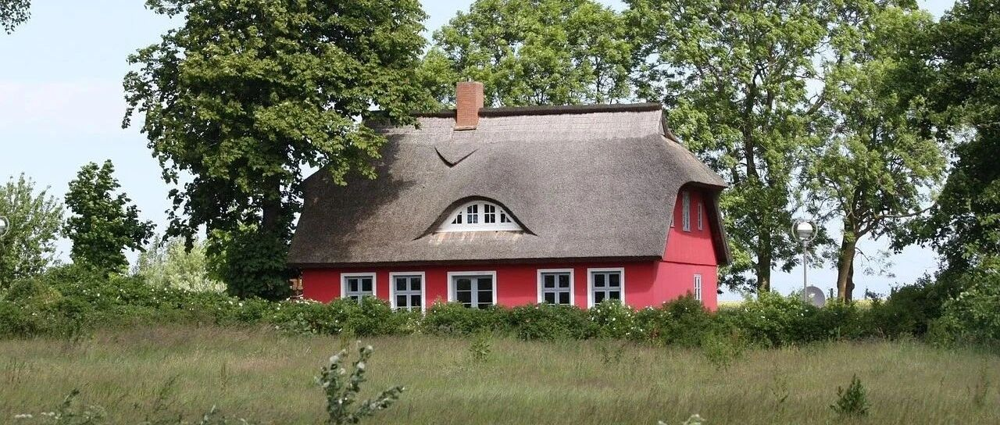

4万块钱，买了带院的房子退休
一起实现财务自由退休
大家好，我是秋秋呀～
我发现对于普通人来说，有自己的一套房，再存点钱，退休很轻松。
「存够100万」我写过专题，今天聊房子，这事也没那么难。
真实案例：我一个已婚有娃的朋友，最近花了4万多块钱，在威海买了一套带院子的房子。
大概是这种：

你可以理解为长租农村宅基地，和子女签好放弃继承协议书，这个房子你就有永久使用权了。
他买房子很洒脱，网上交易，手机地图查了查位置，就定了。
之后利用出差的时间从北京回去看了两次，我推荐了装修给他，估计暑假就能入住了。

他在北京有房子，这套房子是买给自己避暑和养老的。
整个装修下来差不多十万，15万，你就能拥有一个有现代化卫浴和家电，阳光很好带小院的房子。
位置我不太方便说，但是距离高铁站飞机场5公里以内，距离市区大商场开车半小时。

如果你向往美式乡村生活，这种房子在中国一抓一大把。
再来看点其他案例。
之前刷到骑行博主徐云在东北农场10万块钱买了一套房子，院子好几亩，还送了好多煤。
这种农场房子属于国有产权，可以交易，你买了就是自己的房子了。

我看到当地人也有买这种农场房子的，装修的非常好，可以想象退休后在这里惬意的生活。

不过东北和威海冬天还是有点冷，我们再放眼看看南方。
在昆明西山区海口职工宿舍楼，十几万也能买到这种带院子的房子：

距离菜市场啥的都很方便，正常生活没有问题。
这些是十万左右就能买到房子的，如果你预算更多，选择也就更多。
比如精装修的别墅，在贵州龙里附近，居然还不到100万。

附近也有学校，开车到市中心和北京昌平去天安门差不多。
这样的别墅北京周边也有，比如北京密云的弗农小镇，河北怀来的拉菲海岸，距离北京开车一个多小时。
再放眼全球，北海道和小樽也都有十来万一套的房子，如果你去旅游可能一晚上都要上千块。

当然这些房子都有楼龄很老的问题，装修翻新可能比房子本身还贵。
不过，你想在北京上海市中心买房，也没啥新房子。
他们贵不是用的砖更好、样貌更好，而是绑定的教育医疗更好。
那上面房子，缺点也就两个了：
1.教育
有孩子的要考虑孩子上学问题，这些都算小县城和郊区的房子，孩子教学质量不高。
不过据调查，有70%的海淀家长不能接受孩子班级排名一半以下，一半以上家长不能接受孩子比父母学历更差。
按照高中55分流，注定一大批家长的期待要落空。
在三四线你还有可能成为前50%，在大城市你的竞争对手也都是很强的家长。
要自己权衡。
2.看病
医疗条件落差，我深有体会。
夏天回老家带宝宝打疫苗，我以为医院起码有楼房，一进去是个像烧烤摊一样的院子。
有一年冬天，我爸说咳嗽怎么都不好，最后还是坐车去隔壁市医院。
医疗问题确实需要考虑。
这里，想到我小时候甚至老家现在大多数人生病都是在家附近的小诊所看，一个市区也就一两家三甲医院，都是大病才去。
反而在北京，一点点事也想去三甲医院看个专家，是不是有点过度医疗？
这个也需要自己权衡。
不过既然是要做选择，就没有十全十美的。
这篇文章想分享大家，是你对教育医疗要求不高，房子选择就很多。
如果，你就想买学区房，在市中区医疗方便，老破小也不在乎，也是一种选择。
像我就喜欢附近有公园，有小吃摊有烟火气，太精致或者太偏僻我都过不久。
就随自己喜好就好～
多看看多尝试，适合自己的，才是最好的。